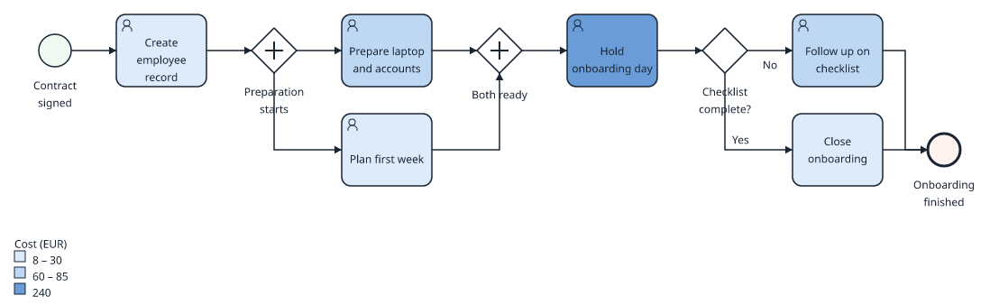
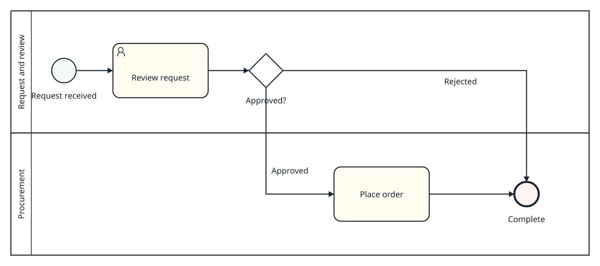

Version 0.2.0 · free and open source · Windows
Model, document and analyse your processes.
ProcessCraft is a BPMN workbench that runs on your computer. Draw a process, give every step its cost, owner and risk, check it against your house rules, and share it as BPMN, PDF or an image. Everything stays in one file on your disk.
Pre-alpha. Windows 10 or 11, 64-bit, unsigned: what the warning means.

Local by design
Your processes stay on your computer.
- OfflineModeling, saving and exporting never need a network connection.
- One file per projectDocuments, dictionary, comments and checkpoints in one
.processcraftfile. - No accountNothing to sign up for or sign in to.
- No telemetryNo listener starts by default. Automation is switched on by you.
From sketch to analysis
One workbench for the whole job.
Draw processes that stay valid.
Pick a step and append the next task, gateway or event from the context pad. ProcessCraft places it, routes the flow and refuses connections BPMN does not allow, with a reason.
- Pools, lanes and sub-processes that grow with their content
- Single keys for common elements,
Rto change a type,Eto rename - Auto-layout with a preview; every edit is one undo step

See where the time and money go.
Give activities typed attributes such as cost, duration, SLA, risk or owner. Then colour the diagram by any of them, or show the value as a badge on each step.
- Number, currency, duration, enum, date, URL and dictionary attributes
- An editable activity table with one column per attribute
- Heatmaps and badges on screen, and in image or PDF exports when you ask

Check every model against your house rules.
Store a conventions profile in the project and ProcessCraft lists what breaks it: missing labels, unlabelled gateway branches, implicit joins, required attributes left empty, free text where a dictionary term belongs.
- You choose which rules apply and how severe each one is
- Roles, systems and documents in a shared dictionary
- A RACI matrix from lanes and roles, exported to CSV

- Element has several incoming flows; use a gateway to join.
end - Required attribute “Cost” has no value.
review - Required attribute “Cost” has no value.
order - A dictionary reference is free text instead of a dictionary entry.
review
The findings processcraft-cli validate reports for this process, with the conventions example from the test fixtures.
Work with the tools around you.
Open BPMN 2.0 files from Camunda Modeler, bpmn.io and other tools, edit them, and save them back. Export SVG, PNG and PDF for your documents, or draw.io for your wiki.
- Vendor extensions are kept through export
- What ProcessCraft cannot edit is kept byte for byte or refused with a reason, never dropped
- Light and dark appearance for every export

Measured, not promised
- 5,000 nodesin the test project used for the measurements, with 10,000 attribute values
- 0.9 msto compute a heatmap over 500 activities
- 30 msto check the whole project against a conventions profile
- 0.3 sto open that project from memory
Release build on one machine, 95th percentile of two runs. Saving the same project to disk took 1 to 2 s and misses its budget. All measurements and what is not verified.
For teams that automate
Your scripts and AI assistant make the same edits you do.
A command-line tool and a local MCP server run the same commands as the canvas: build a model from a batch, validate it in CI, export RACI or images. An assistant such as Claude can draft a process from a text description.
See the automation examples# fail the build on any convention warning
processcraft-cli validate project.processcraft --fail-on warning
# RACI matrix as CSV
processcraft-cli export-raci project.processcraft <doc> procurement --out raci.csv
# heatmap image of the Cost attribute
processcraft-cli export-image project.processcraft --document-id <doc> \
--diagram-id <diagram> --overlay-attribute <cost> --format png --out cost.pngTry it on one of your own processes.
Free, MIT licensed, and it never leaves your machine.